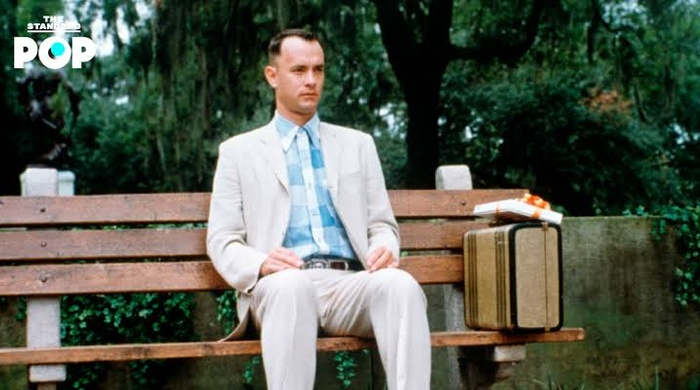

ตัวละครแต่ละตัวทิ้งความรู้สึกที่แตกต่างกันไว้ลองเลือกคอลเลกชันแล้วค้นหาเรื่องราวที่ตัวละครทิ้งไว้ดู
ตัวละครไทยที่สื่อสารเรื่องราวใกล้ตัว

ตัวละครต่างประเทศที่ยิ่งดู ก็ยิ่งรู้สึกชอบ
อนิเมชั่นที่ตัวละครดีจนลืมไม่ลง